Table of Contents
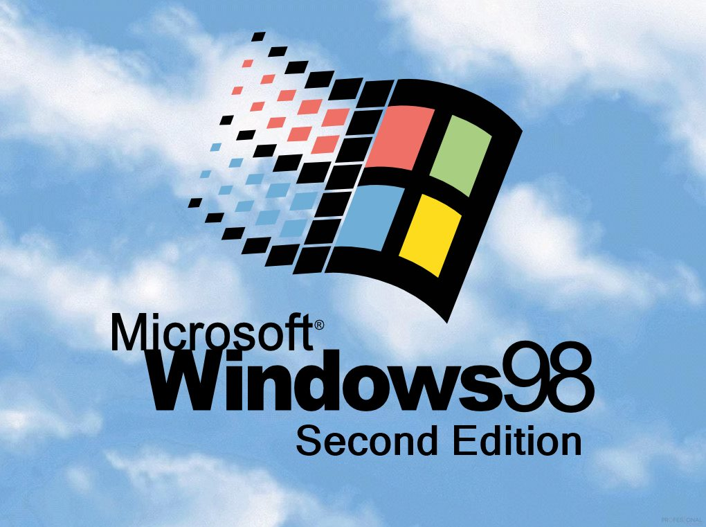
DISCLAIMER: I started writing this article a few months ago. So I'm uploading it in 2024. Sorry about that. :P
A little nostalgic introduction…
The other day, I was struck by nostalgia. After having to deal, at work, with the fact that Windows 7 is now discontinued, I was thinking about how some of the old Microsoft OSes were good and simply just worked.
I was just a kid when I got my first computer. My father had bought it circa 2002, and it was the best computer available in Brazil at the time, with incredible specs (which I made sure to boast while talking about it to my friends) of 512MB of RAM, a 9GB Hard Disk, 32x CD-ROM drive, and a glorious Intel Pentium III processor running at amazing 800MHz. Oh, and it came with Windows 98, Second Edition, in Brazillian Portuguese.
I think that at that time, it was already the dawn of Windows XP, since Windows 98 was already four years old, but I remember looking at Windows XP and thinking all those colors were ugly. The system was indeed very fast and capable, and as a kid I was worried that newer games were not going to run on 98 very soon, but something about 98's minimal looks always made it enjoyable to me.
Thinking in retrospect, after Windows 7, things got really really weird. I don't think that operating systems should come out-of-the-box with so many ads, online interactions and intrusive stuff such as insisting on using very specific default browsers (I'm looking at you, Edge).
So I wanted to experiment again with what Windows 98 has taught me. I decided I was going to install it on a virtual machine and do my best to make it usable in 2024, especially if I could do some programming on it. I recall that the last time I tried I failed miserably, but that wouldn't happen this time – and it didn't.
The following bits are a structured version of my notes after configuring
Windows 98 on VirtualBox. Make sure you get everything you need before
starting. And if you happen to find stuff you want to install but isn't here, I
recommend either creating an ISO containing your files with mkisofs, or
setting up an FTP server you can connect to by using the old version of
FileZilla that runs on W98.
Preparation
You'll need a few things along the way. These are necessary for a minimal experience:
- VirtualBox (an updated version is enough);
- A Windows 98 Second Edition ISO. I am using a Brazillian Portuguese ISO. It is not an unaltered copy, but it was the best I found since I wanted a Brazillian Portuguese system.
- A patch for allowing up to 4GB of RAM on Windows 98.
- SciTech Display Doctor video driver, as explained on this post on VirtualBox forums. This is an abandonware ISO containing the driver.
- DirectX 9.0c Redistributable.
- KernelEx 4.5.2 and unicows.exe, for forward compatibility with newer versions of Windows.
- Internet Explorer 6 installer (Brazillian Portuguese)
- (OPTIONAL) AutoPatcher for Windows 98 SE. I did not use this since it kind of messes up my language settings on the computer, but it is probably a good thing to use if you want a safer system with latest patches.
Notice that most of these software can be found on the Internet Archive, so if you're not seeing something in your desired version or language, you can always download abandonware from the archive for free – some are even posted by Microsoft themselves!
Creating an ISO file
Whenever you want to create an ISO file, you can use mkisofs, if you're using
Linux like me. Suppose you have a directory called util with all the stuff you
need to use. Here is how you'd create an util.iso file from that directory:
mkisofs -lJR -o util.iso util
Installing Windows 98
Creating the virtual machine
First of all, create a new virtual machine on VirtualBox. It should be labelled as a Windows 98.
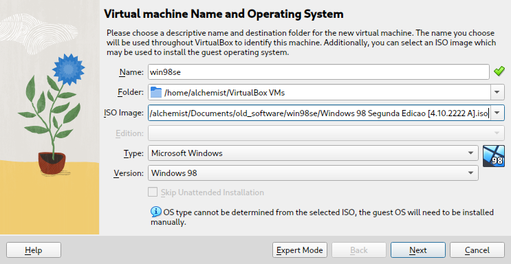
Use a maximum of 1024MB for RAM. This should be enough for now. We'll raise it to 4096MB afterwards.
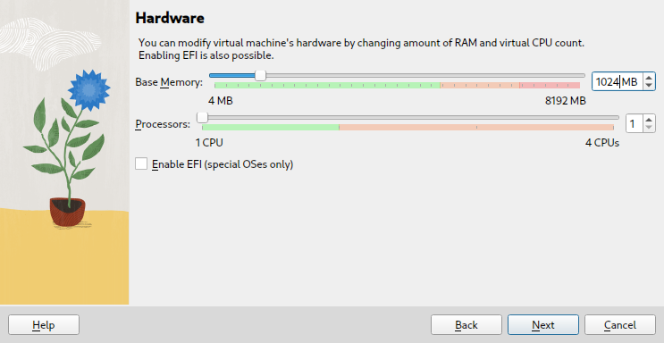
For hard disk capacity, 10GB should be enough.
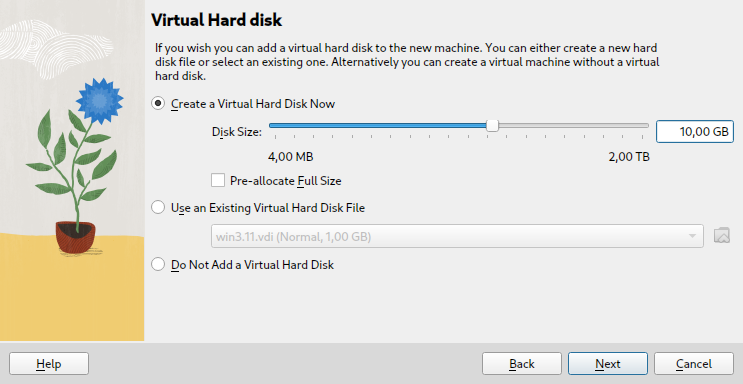
Here is a summary of the configuration:
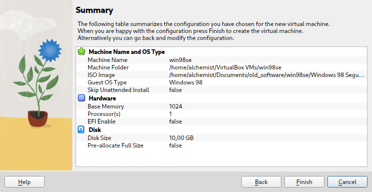
Now boot your VM.
Configuring hard drive and beginning the installation
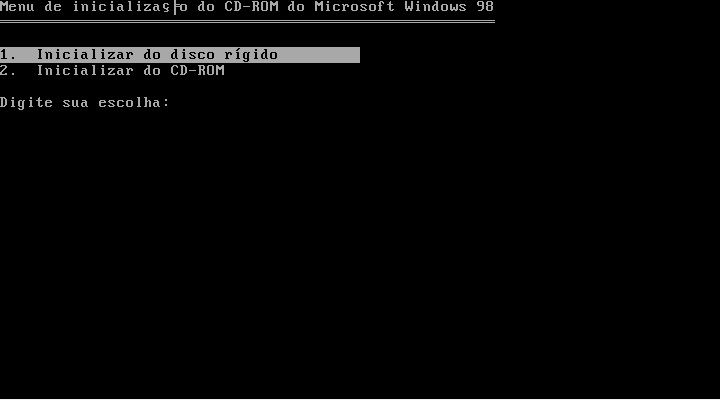
Again, in my case, I'm using a Portuguese ISO, so pick up the option to boot from CD.
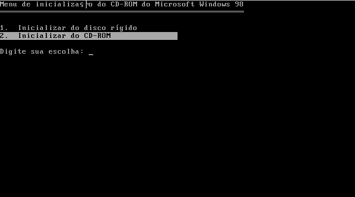
Run the installer from the first option.
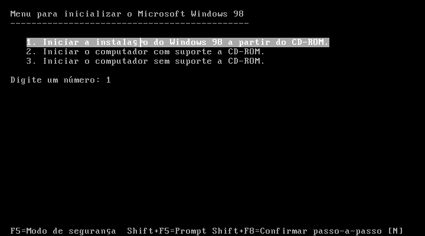
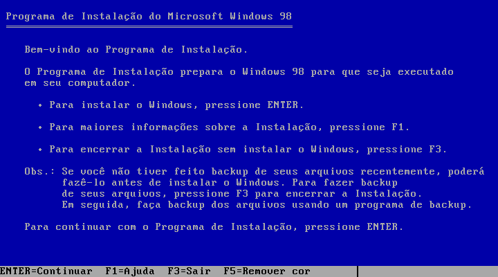
Now configure the unallocated space on your virtual hard drive. Make sure you activate support for large storage disks.
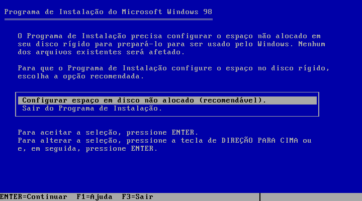
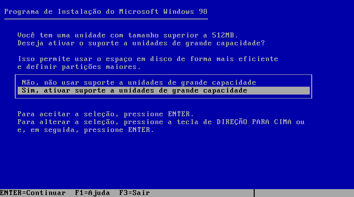
You should have to reboot and enter the CD installation again. Then follow the installation instructions, and you should see some prompts like the following.
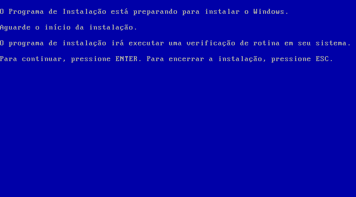
Skip through them, and at some point you'll end up at the graphical installer.
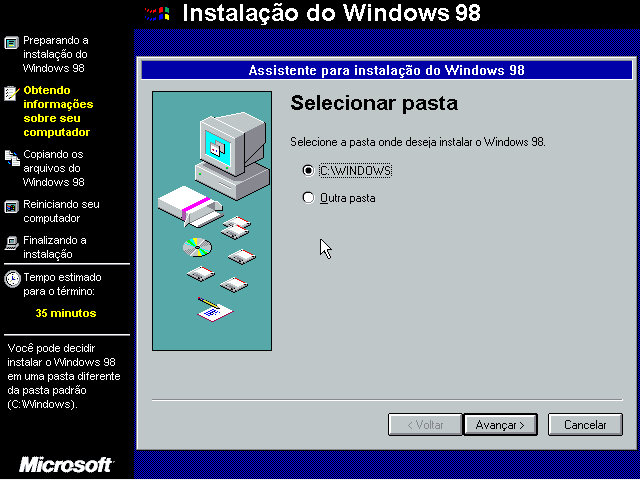
At this point, I generally select a personalized setup so that I can enable all features, including extra languages.
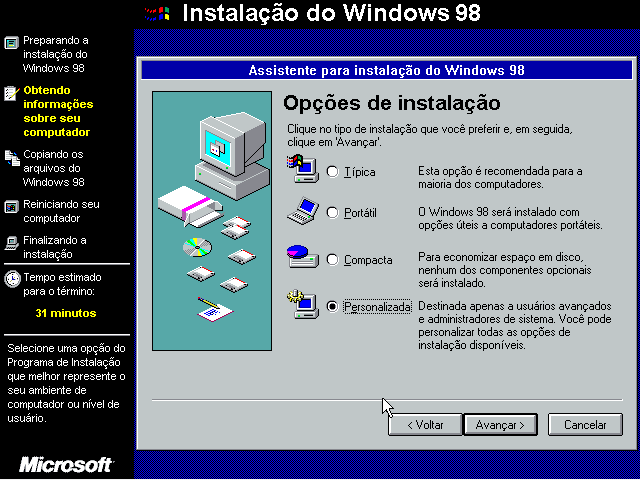
On keyboard layout, if you're installing a Brazillian Portuguese system, I recommend using the Português (Brasil ABNT2) keyboard.
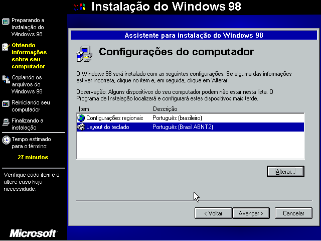
Now everything should be straightforward.
At some point you should be prompted to insert a valid CD key. Most links to
Windows 98 .iso files should be provided along with valid CD keys. This is the
case for the Brazillian Portuguese .iso I am using.
Finishing the installation
Go on with the installation and reboot a few times; this time, boot from your hard disk instead of the CD. You should be able to log in.
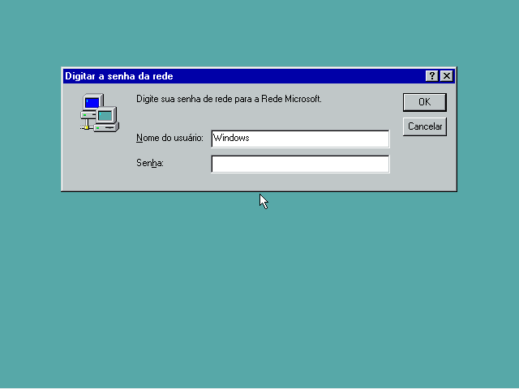
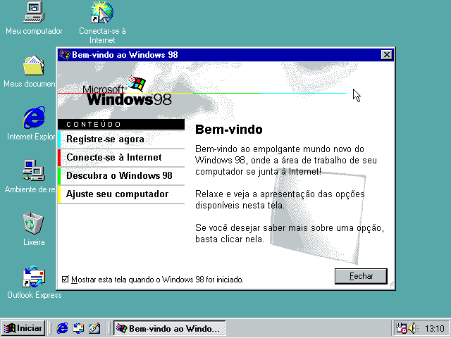
Extending available memory up to 4GB of RAM
Now let's allow up to 4GB of RAM on our Windows 98 machine. Go ahead and
download the 4GB Patch I mentioned earlier. I recommend creating an ISO with
mkisofs and mounting it on the VM.
The files are already disposed on the hierarchy they are supposed to be on C:\
drive, so you should just copy the files to their desired location. However,
make sure you rename the files that are being replaced, in case anything goes
wrong.
In case some files are apparently missing, on Windows Explorer, go to Show >
Folder Options, then allow hidden files to be viewed.
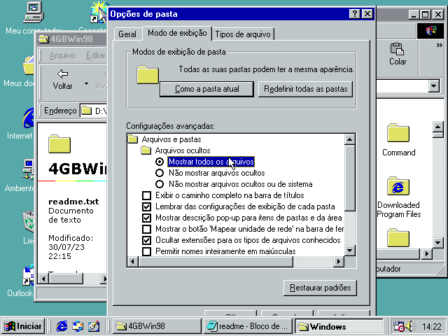
After finishing, turn off the virtual machine. Go back to VirtualBox, right click the virtual machine and go to Settings. On the System section, go ahead to the slider called Base Memory and set it to 4096MB.
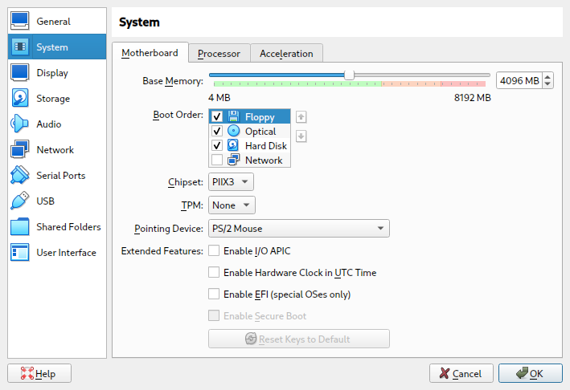
Start your virtual machine once again. It is possible that an error occurs on the first boot; if that happens, just turn of the machine and turn it on again.
Finally, right click on My Computer and go to Properties. You should see
that your virtual machine now has close to 4GB of RAM installed.
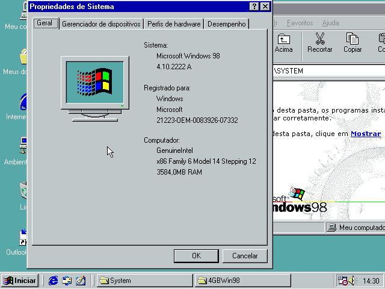
Installing a video driver
Firstly, turn off your VM, right click it on VirtualBox, then go to Settings. On the Display tab, set Video Memory to 128MB, and activate "Enable 3D Acceleration".
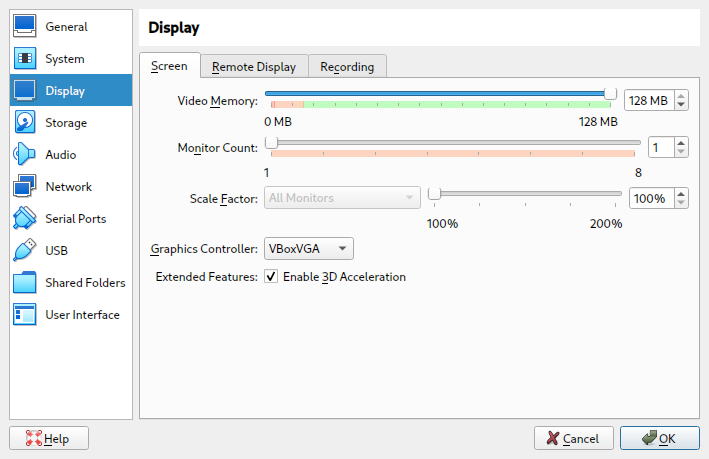
Boot the virtual machine and mount the ISO for SciTech Display Driver. You
should be able to run the installer from D:\ driver and you'll also find a
text file containing the activation, which will be needed later.
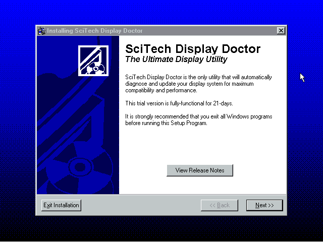
Do an express installation and, at the end, allow it to reboot your computer.
On boot, you should see the following screen for SciTech Display Doctor. Scroll down, select Register Now, and use the credentials on the text file on the disc.
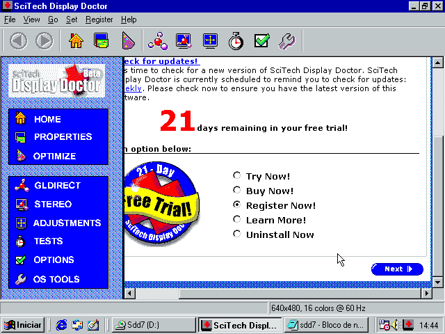
You'll be prompted to reboot at the end; do it again. Once you do, on the video driver's dashboard, select "Monitor not selected" and, on the new screen that opens, select a proper Super VGA resolution.
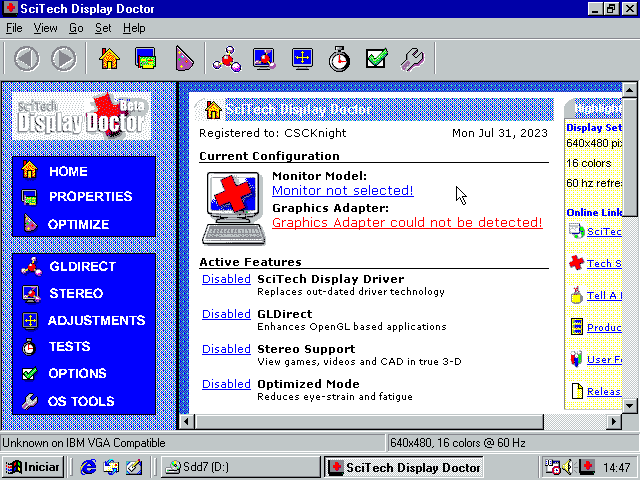
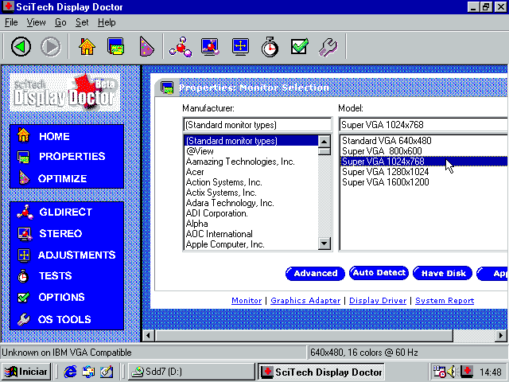
Reboot Windows again and you'll see that the monitor was selected.
Now click the "Disabled" link beside "SciTech Display Driver". On the new screen, select SciTech Nucleus Driver. Apply and reboot again.
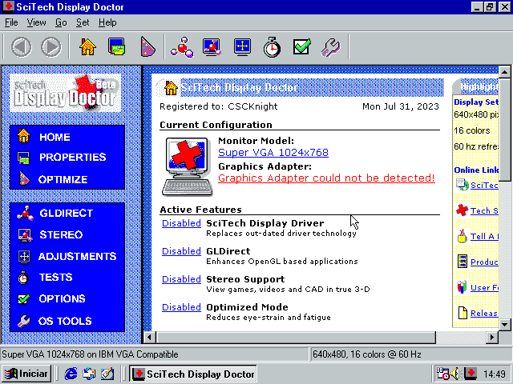
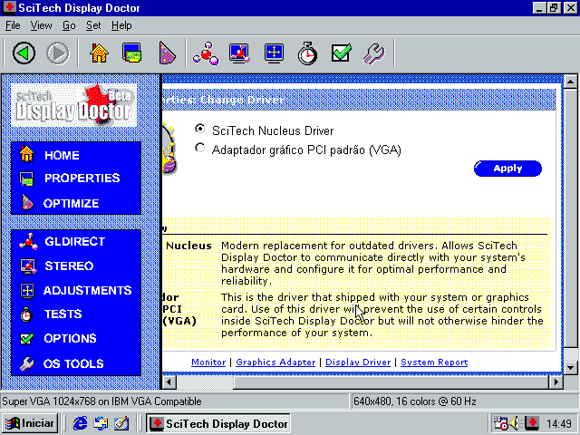
Now you'll see that the Graphics Adapter for VirtualBox is properly recognized on the dashboard.
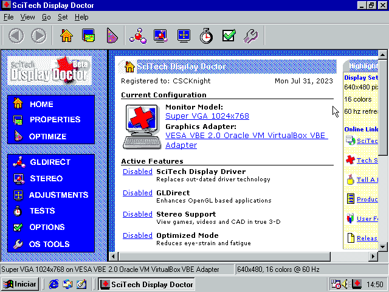
Now, right click on the desktop and select Properties, then go to the Configuration tab. On Colors, select High Color (16 bits), then click OK.
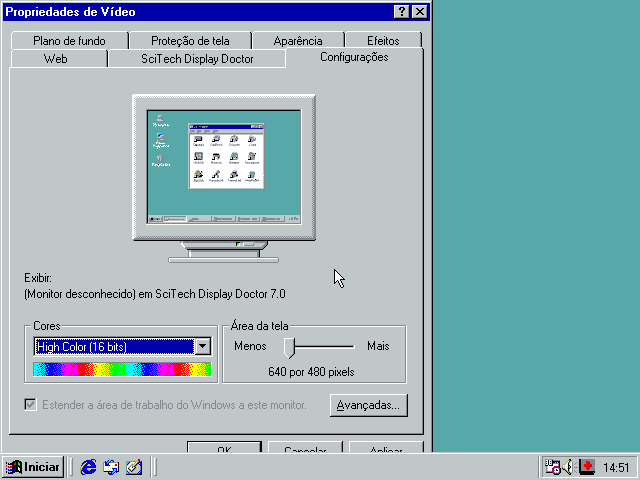
You'll be prompted to reboot once more. The reboot may hang; allow it to be like that for a few seconds, then force a reboot through VirtualBox. If Windows asks whether you want to boot on Safe Boot, just pick Normal Boot.
Once again, right click the Desktop and go to properties. Now you should be able to select True Color (32 bit) mode, and a proper resolution – I'm picking 1024x768.
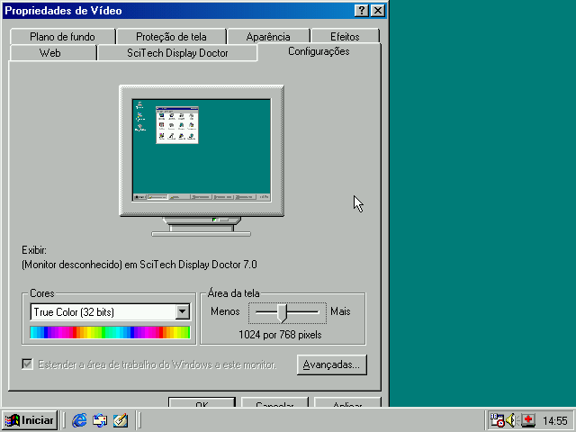
Now your desktop works with proper colors and a proper resolution!
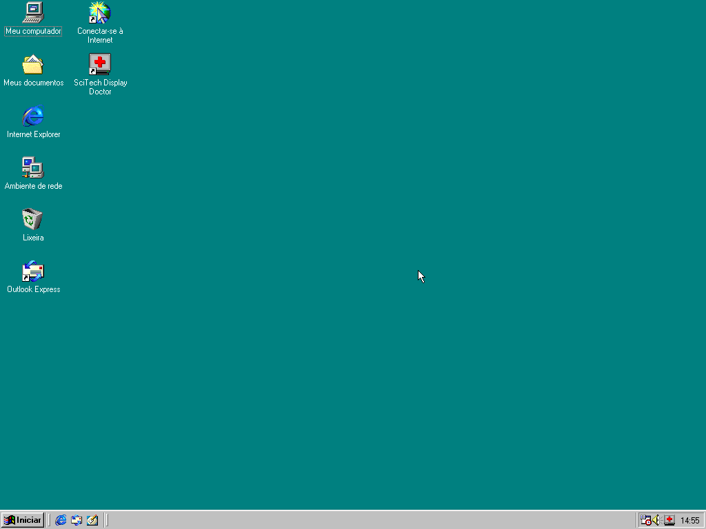
Improving graphics
Your system is now OK for running most graphical applications, however it is still not enough if you really want graphics.
If you want DirectX 9 and proper OpenGL 2.1 support, you'll need to do a few things:
- Install DirectX 9.0c Redistributable for DirectX support. It will give you
access to tools you'd need such as
dxdiag. - Download the MESA 7.5.1 OpenGL 2.1 implementation for Win32. This will give
you a better implementation of OpenGL than the one that SciTech Display
Driver can give you. To use it, extract the contents of the zip file in
C:\Windows\System(I recommend renaming the oldOPENGL32.DLLbefore doing that!).
Fixing MS-DOS Prompt memory error
Now that we have a video driver installed, we might have problems while running applications such as the MS-DOS Prompt, for example.
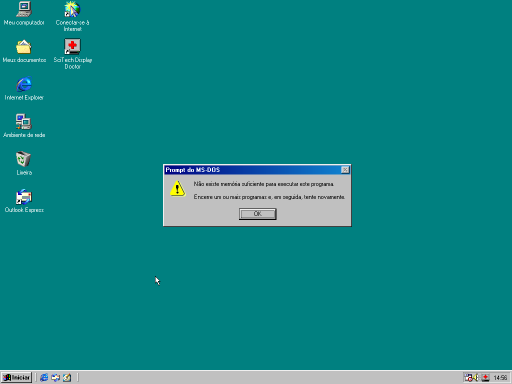
This is an easy fix, but not an obvious one. According to one of the answers on a forum, it's a vcache issue.
Go to Start > Execute, and type System.ini, then press Enter. You'll be
presented with an .ini file on Notepad.
Find the [vcache] section and add the new line, like the example below (do
not just replace the entire section if there's something already there!):
[vcache] MaxFileCache=512000
Save the file, exit and reboot. You should now be able to run the MS-DOS Prompt with no further problems.
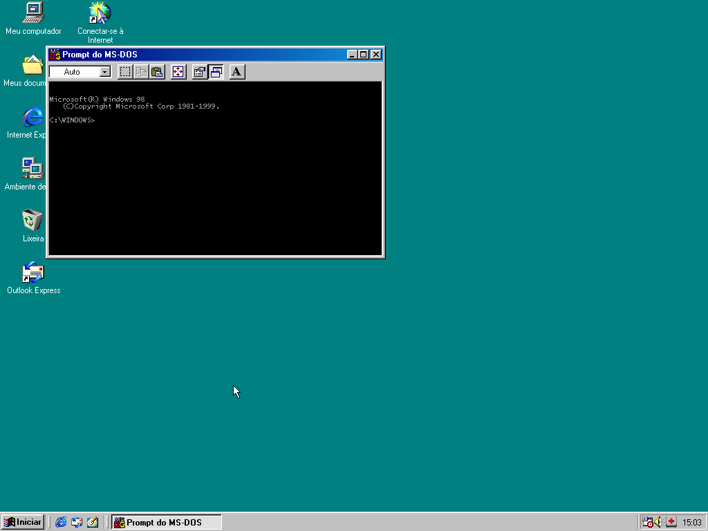
Installing KernelEx to allow some forward compatibility
Some programs will simply not run on Windows 98, period. But sometimes you can force them to run like newer versions of Windows through a compatibility layer called KernelEx.
First, run the installation for unicows.exe and, when prompted to an extract
location, use C:\Windows\System (Note that this is not System32!).
Afterwards, run the KernelEx installation. Enable KernelEx extensions for all applications and, when prompted to reboot, do it.
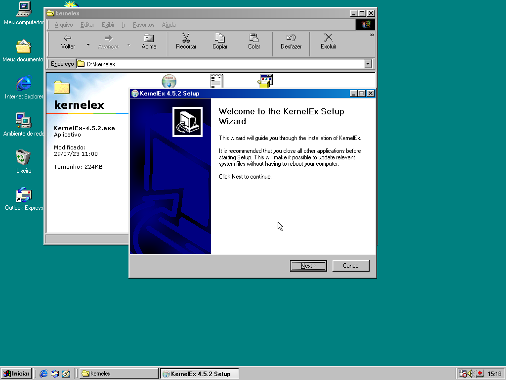
You should now be able to right click any application or shortcut, go to Properties, and then you'll see a KernelEx tab where you can configure the kernel to act like some newer versions of Windows.
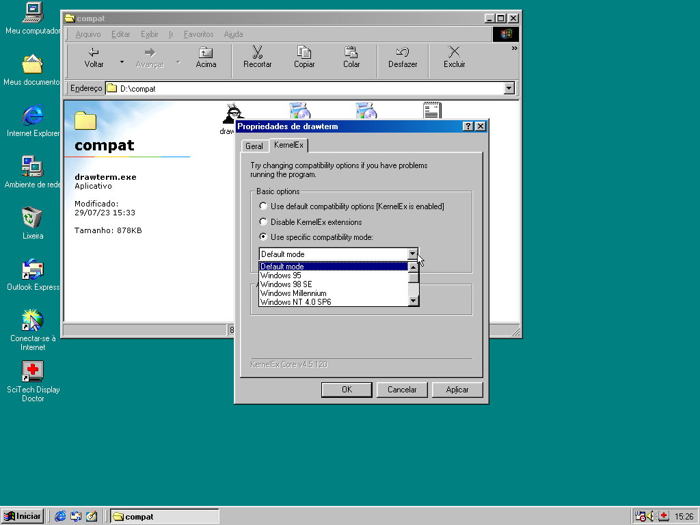
Updating Internet Explorer to IE6
At this point, run the installer for Internet Explorer 6. It should extract all installer files and then execute the setup.
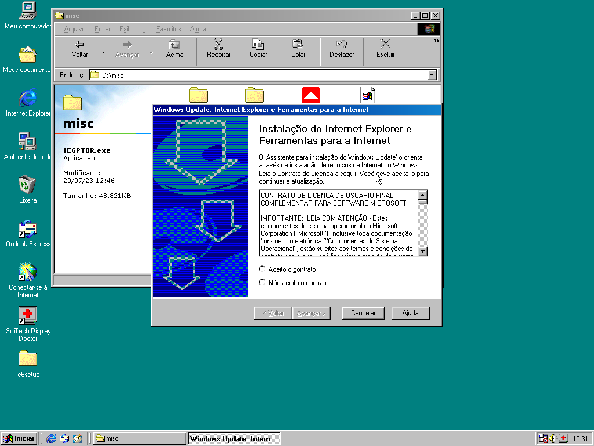
This process will update Internet Explorer, Windows Media Player and Outlook Express.
Notice that the installer will automatically reboot the system after installation!
Extras
Some of the following programs are stuff I installed for enjoying the system.
Essential programs
These are programs I consider essential for any basic workflow.
RetroZilla
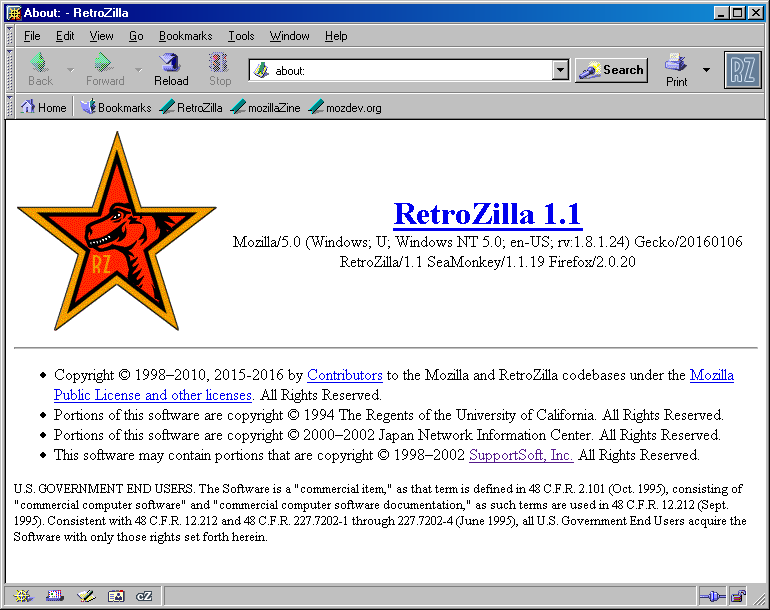
You can only do proper web browsing and e-mail with this. Nuff said.
I tested it with my Google account as well – though you need a password for insecure apps, it works like a charm.
Winamp
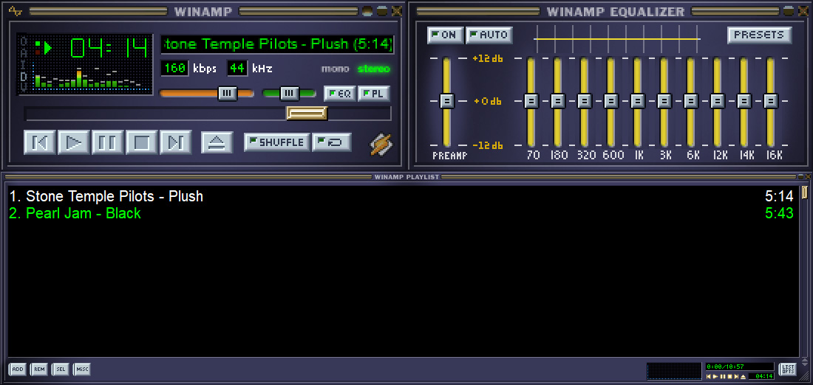
Probably the best music player of all time… back then.
I'm using version 5.33, and I suppose this was the last version to work on Windows 98.
Adobe Reader 6.0
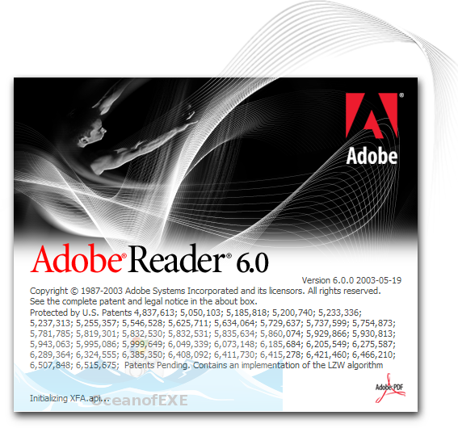
By far the best (and maybe the only) PDF reader for Windows 98.
7-Zip 4.65
You'll certainly need this to deal with compressed files.
Development
These are some of the tools I used for development on Windows 98.
Visual Studio 6
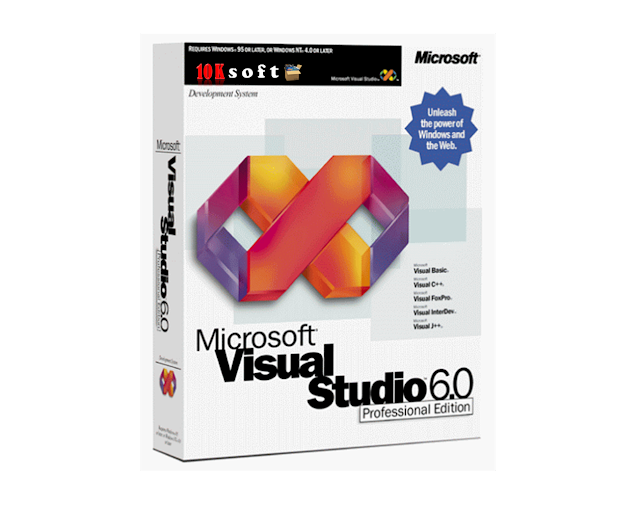
This is a fine piece of work. I still remenber when I first fiddled with Visual Basic 6, when I didn't even know I was, in fact, creating software and using a programming language.
You'll find everything you need on the following link:
https://archive.org/details/en_vs6_ent
…however, for the sake of reproducibility, I'll also list below the steps needed to make Visual Studio 6 work.
- Install Visual Studio normally using the ISO image. Use the CD key
873-0188911. - Install Service Pack 6 (extract and run
setupsp6.exe) - Install the KB3096896 update.
- Open the registry (
Start>Run> typeregedit). Go to
[HKEY_LOCAL_MACHINE\SOFTWARE\Microsoft\VisualStudio\6.0\ServicePacks]and change the following keys and values (keepregeditopen, as you'll need it later). Notice thatsp6is replaced bysp5:"latest"=dword:00000005 "sp5"=""
- Install
vcpp5.exe; Go to the same registry key as and restore the keys and values.
sp5becomessp6again:"latest"=dword:00000006 "sp6"=""
Now you're ready to enjoy Visual Studio 6!
- Other stuff on VS6…
I ended up doing a lot of work by using GLUT and OpenGL, though I couldn't rely on the device drivers I installed when configuring Windows 98. For these to work, I had to install the MESA implementation of OpenGL for Win9x systems.
You can install a working MESA 7.5.1 driver (with OpenGL 2.1 support) from here: https://retrosystemsrevival.blogspot.com/2020/04/opengl-21-win95.html
Furthermore, you'll find a working version of binaries and source code for GLUT 3.7.6, which you can use on Visual C++ 6.0 (complete with spec documents) here: https://user.xmission.com/~nate/glut.html
Here is a timelapse of me working with some very basic OpenGL 2.1 / GLUT code in Visual C++ 6.0.
Project code on GitHub: https://github.com/luksamuk/vscpp6-glut
Other useful tools
These tools are not really necessary and I didn't really use them for much work, but they certainly come in handy every once in a while.
FileZilla Client
Whenever I was too lazy to build a .iso file just to fetch a simple installer,
I just used an FTP server and fetched the files from there. To do that, I used
an old version of FileZilla.
You'll find it on this list: http://dk.toastednet.org/vogons/win98/
You may want to use Passive Mode on Windows 98 if you're using a NAT network (which is probably the case when you're using an Oracle VirtualBox VM).
Process Explorer
Windows 98 sometimes crashes with processes doing weird stuff. I know, I know, it is an old system with many flaws.
Whenever I needed to take a better look at how processes were behaving, I used an old version of Process Explorer.
You'll also find it on this list: http://dk.toastednet.org/vogons/win98/
AutoPatcher for Win98SE
If you're taking your installation a bit more seriously, you might want to run the AutoPatcher for Windows 98 SE.
However, notice that, if you like Windows 98 the way it is right now, you might not wanna do this. The default installation for the patch will replace certain system files, deleting most of the system shortcuts and changing your system's default language.
Open the instalation file for AutoPatcher and install it.
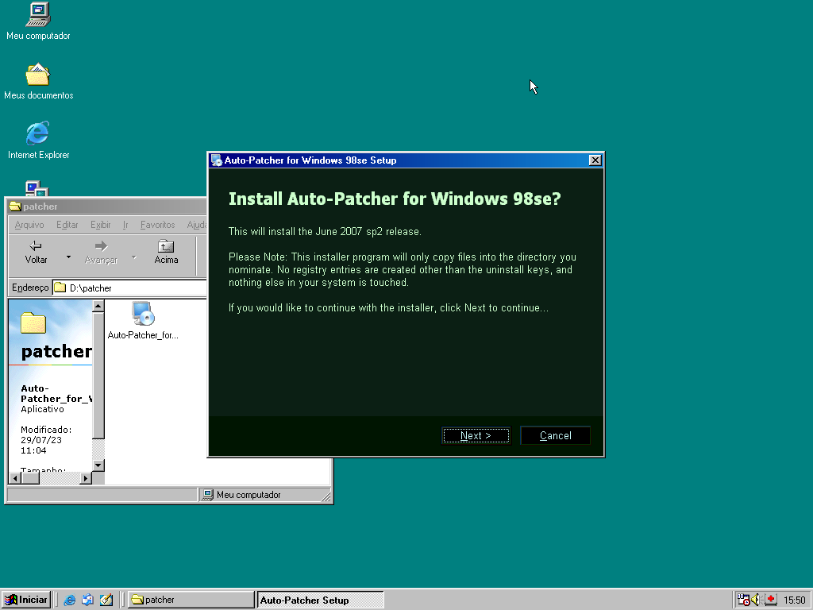
It will create a shortcut on your desktop; double click it. You should be presented with an MS-DOS Prompt like the following.
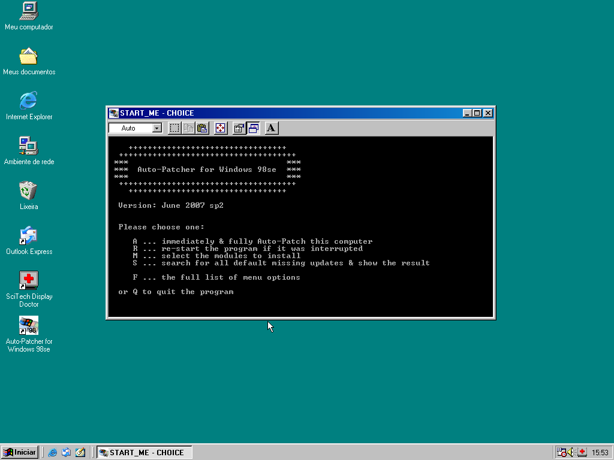
Type "A" and let it patch everything it can. Then select "I" so that it installs all modules.
Your computer will reboot SEVERAL TIMES while installing programs, hotfixes and updates. Just accept everything and skip installations when they are in loop.